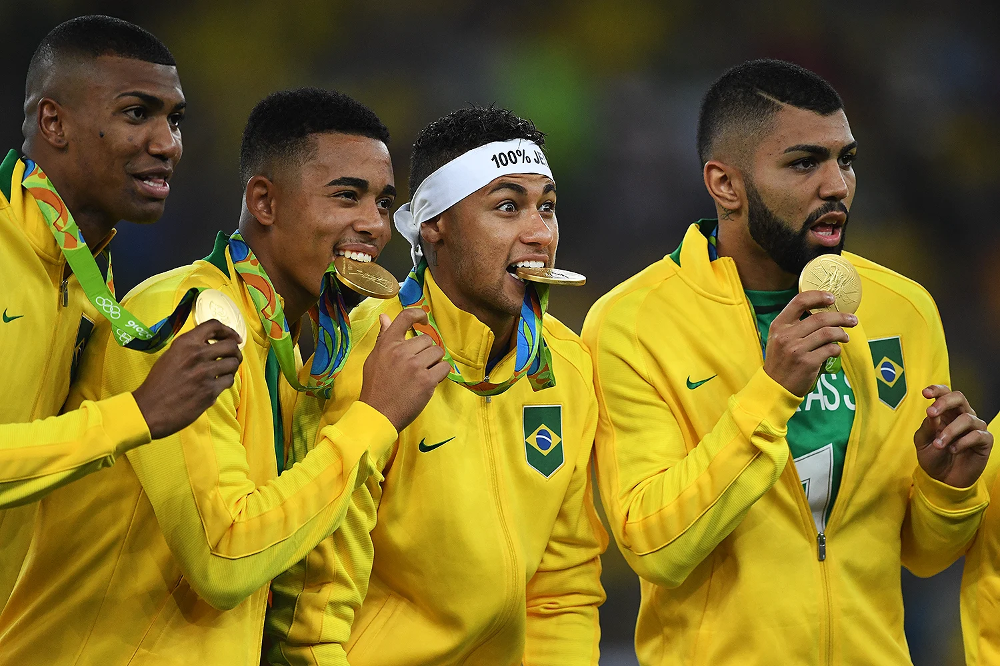

O futebol olímpico enfrenta diversos desafios, incluindo:
Calendário: O torneio é realizado em meio a outras competições, dificultando a disponibilidade de jogadores.
Sub-23: A limitação de atletas com mais de 23 anos pode afetar a qualidade das equipes, já que muitos jogadores experientes não podem participar.
Infraestrutura: A qualidade dos estádios e campos em algumas cidades-sede pode ser insuficiente para um evento desse porte.
Diferenças culturais: As variações no estilo de jogo e nas expectativas dos torcedores podem gerar conflitos.
Gestão: A coordenação entre as federações nacionais e o Comitê Olímpico Internacional (COI) pode ser complexa e gerar desentendimentos.
Exposição e mídia: O futebol olímpico muitas vezes não recebe a mesma atenção que outras competições, como a Copa do Mundo, limitando sua visibilidade.br>